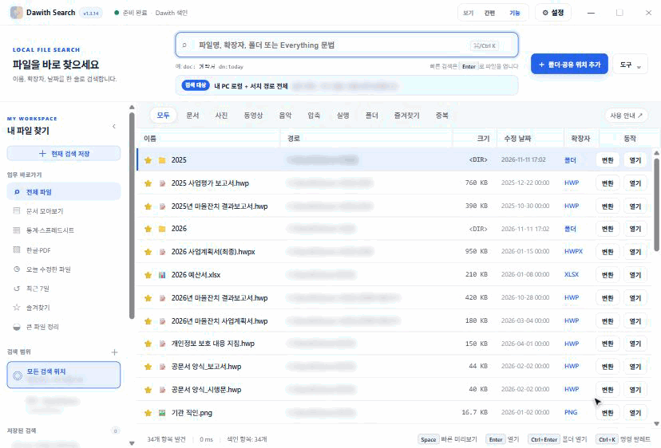
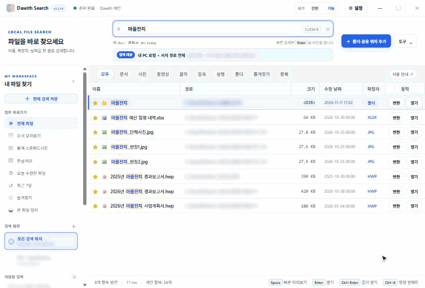

기본 검색 범위로컬 전체 자동
폴더를 하나씩 고르지 않아도 됩니다.
로컬 파일은 자동으로 찾고, 공유 폴더나 외부 디스크는 필요한 만큼만 지정합니다. 기관에서 매일 하는 파일 검색을 앱 하나에서 끝냅니다.
오픈베타 macOS와 Windows 최신 경량 빌드를 함께 제공합니다. 사용 중 불편한 점은 문의하기로 알려 주세요.
앱을 실행한 뒤 검색어를 입력하세요. 공유폴더·NAS·외부 디스크만 검색 범위에서 추가하면 됩니다.
폴더를 하나씩 고르지 않아도 됩니다.
UNC·연결 디스크를 직접 추가합니다.
Windows x64 설치 파일과 macOS Universal DMG.
새 버전이 나오면 버튼 한 번으로 설치됩니다.
실제 앱을 예시 파일로 녹화했습니다. 경로는 흐리게 가렸습니다.
한 글자씩 칠 때마다 결과가 바로 바뀝니다. 파일 수십만 개에서도 검색은 0.1초 안쪽이라 Enter를 누를 필요가 없습니다.
‘ㅁㅇㅈㅊ’처럼 초성만 입력해도 ‘마을잔치’가 들어간 파일과 폴더가 나옵니다. 정확한 파일명이 기억나지 않을 때 편합니다.
문서·사진·동영상 탭으로 종류를 좁히고, 머리글을 눌러 수정 날짜·크기·이름 순으로 정렬합니다. 한 번 더 누르면 반대 순서입니다.

파일을 고르고 Space를 누르면 앱 안에서 바로 봅니다. 사진이 맞는지 확인하고 Esc로 닫으면 됩니다.

여러 파일을 골라 PDF로 묶거나 형식을 바꿉니다. 원본은 그대로 두고, 같은 폴더에 새 파일을 만듭니다.
검색창과 결과만 크게 보이는 간편 화면, 필터·정렬·분석까지 다 보이는 기능 화면을 위쪽 ‘보기’에서 바로 바꿉니다.
Windows에서는 Dawith 색인으로 파일을 찾습니다. 다른 프로그램을 따로 설치할 필요가 없고, 처음 한 번 파일 목록을 만든 뒤에는 바로 검색됩니다. macOS에서는 Spotlight와 로컬 색인을 함께 씁니다.
Windows 설정에 UNC 경로를 추가하면 접근할 수 있는 공유폴더는 자체 색인으로 함께 검색합니다.
이미지를 PDF로 바꾸고 PDF를 합치거나 나눕니다. Office·한글 문서는 설치된 프로그램으로 PDF를 만들며 원본은 그대로 둡니다.
미리보기, 저장 검색, 즐겨찾기, 중복 분석, 대용량 파일 확인, 안전한 휴지통 삭제도 할 수 있습니다.
사용자 홈과 연결된 로컬 저장소를 자동으로 검색합니다.
\\서버\\공유폴더, NAS, 외장 디스크를 경로로 추가합니다.
자동 검색 범위와 추가한 외부 경로를 함께 검색합니다.
이 페이지가 접속한 기기의 운영체제를 확인해 맞는 파일을 먼저 보여 줍니다. 다른 운영체제용 파일도 아래에서 받을 수 있습니다.
Windows 10·11용 경량 설치 파일입니다. HWP 본문도 검색하고 공유폴더도 지정할 수 있습니다.
Windows 설치 파일 받기 ↓파란 ‘PC 보호’ 창이 뜨면 추가 정보 → 실행을 누릅니다.앱 하나로 Apple Silicon과 Intel Mac에서 모두 실행됩니다. 최신 경량 검색 엔진과 업데이트 흐름을 함께 제공합니다.
macOS DMG 받기 ↓설치 후 Applications 폴더로 이동Ubuntu·Debian은 .deb, Fedora·RHEL은 .rpm, 그 밖의 배포판은 AppImage를 받으세요.
.deb 받기 ↓.rpm · AppImage · 베타macOS는 DMG에서 앱을 Applications로 옮기고, Windows는 설치 파일을 실행합니다.
로컬 파일은 기본으로 자동 검색합니다. 공유폴더나 외부 디스크만 설정에서 추가합니다.
파일명·경로·본문·크기·수정일을 조합하고 Enter 또는 Space로 작업을 이어갑니다.
어떤 버튼을 누르고 어디를 확인하면 되는지부터 알려 드립니다.
Windows에서 설치파일을 열면 Windows의 PC 보호 창이 뜰 수 있습니다. 공식 GitHub 릴리스에서 받은 파일이라면 추가 정보 → 실행을 누르면 설치를 계속할 수 있습니다.
검색 범위 → 폴더·공유 위치 추가에서 \\서버\\공유폴더 또는 연결된 외부 경로를 추가하세요.
새 버전이 있으면 앱 상단에 업데이트 버튼이 나타납니다. Windows에서는 버튼을 누르면 설치파일을 받아 설치하고 앱을 다시 시작합니다. macOS는 DMG를 받아 설치합니다.
검색과 보조 기능은 로컬 규칙과 색인으로 처리합니다. 검색 대상 파일을 외부 AI 서버로 보내지 않습니다.
현재 배포본은 코드 서명 인증서 없이 빌드되어 macOS Gatekeeper 또는 Windows SmartScreen 경고가 표시될 수 있습니다. 공식 릴리스에서 받은 파일인지 확인한 뒤 운영체제 안내에 따라 실행하세요.
Dawith Search는 무료로 쓰는 로컬 검색 도구입니다. 사용하다 막힌 점, 오류, 필요한 기능을 알려 주세요.